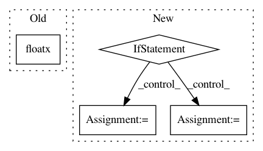

023331ec2a7b0086abfc81eca16c84a1692ee653,keras/layers/core.py,TimeDistributedDense,build,#TimeDistributedDense#Any#,1231
Before Change
super(TimeDistributedDense, self).__init__(**kwargs)
def build(self, input_shape):
self.input_spec = [InputSpec(dtype=K.floatx(),
shape=(None,) + input_shape[1:])]
input_dim = input_shape[2]
After Change
This version performs the same function as Dropout, however it drops
entire 2D feature maps instead of individual elements. If adjacent pixels
within feature maps are strongly correlated (as is normally the case in
early convolution layers) then regular dropout will not regularize the
activations and will otherwise just result in an effective learning rate
decrease. In this case, SpatialDropout2D will help promote independence
between feature maps and should be used instead.
// Arguments
rate: float between 0 and 1. Fraction of the input units to drop.
data_format: "channels_first" or "channels_last".
In "channels_first" mode, the channels dimension
In pattern: SUPERPATTERN
Frequency: 3
Non-data size: 4
Instances
Project Name: keras-team/keras
Commit Name: 023331ec2a7b0086abfc81eca16c84a1692ee653
Time: 2017-02-09
Author: francois.chollet@gmail.com
File Name: keras/layers/core.py
Class Name: TimeDistributedDense
Method Name: build
Project Name: keras-team/keras
Commit Name: f1d2a776dfa29bf08a8a13745be82e7d6788e365
Time: 2021-01-25
Author: scottzhu@google.com
File Name: keras/layers/dense_attention.py
Class Name: BaseDenseAttention
Method Name: _apply_scores
Project Name: Hironsan/anago
Commit Name: 7c54ef6464c5d2885faf3e8b3ad60451d1894d7a
Time: 2018-05-28
Author: hiroki.nakayama.py@gmail.com
File Name: anago/layers.py
Class Name: ChainCRF
Method Name: build